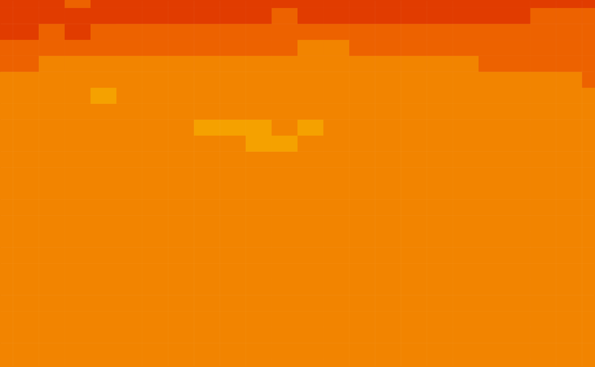

Animate a 1d tour path with an image plot. This animation requires a different input data structure, a 3d array. The first two dimensions are locations on a grid, and the 3rd dimension gives the observations to be mixed with the tour.
Usage
display_image(xs, ys, ...)
animate_image(data, tour_path = grand_tour(1), ...)Arguments
- xs
x limit that is used in making the size of the plot
- ys
y limit that is used in making the size of the plot
- ...
other arguments passed on to
animate- data
matrix, or data frame containing numeric columns
- tour_path
tour path generator, defaults to 2d grand tour
See also
animate for options that apply to all animations
Examples
str(ozone)
#> num [1:24, 1:24, 1:72] 260 258 258 254 252 252 250 248 248 248 ...
#> - attr(*, "dimnames")=List of 3
#> ..$ lat : Named chr [1:24] "-21.2" "-18.7" "-16.2" "-13.7" ...
#> .. ..- attr(*, "names")= chr [1:24] "1" "1729" "3457" "5185" ...
#> ..$ long: Named chr [1:24] "-113.8" "-111.3" "-108.8" "-106.3" ...
#> .. ..- attr(*, "names")= chr [1:24] "1" "73" "145" "217" ...
#> ..$ time: Named chr [1:72] "1" "2" "3" "4" ...
#> .. ..- attr(*, "names")= chr [1:72] "1" "2" "3" "4" ...
animate_image(ozone)
#> Adding column names.
